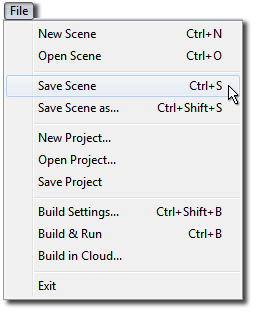
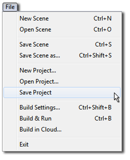
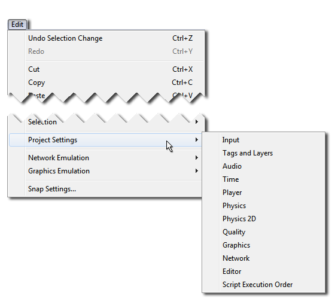
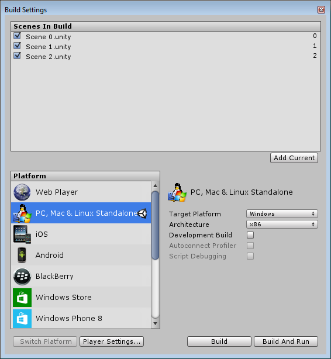

Unity stores lots of different types of information about your project, and some of these are saved in different ways to others. This means that when your work is saved depends on what kind of changes you are making.
Of course, we recommend you save regularly, and use a Version Control System (VCS) to preserve incremental changes to your work, and allow you to try out and roll back changes without risking loss to your work.
Saving changes to the current scene (“Save Scene”)

Scene changes include modifications to any objects in the Hierarchy. For example, adding, moving or deleting Game Objects, changing parameters of hierarchy Game Objects in the inspectorA Unity window that displays information about the currently selected GameObject, Asset or Project Settings, alowing you to inspect and edit the values. More info See in Glossary.
To save changes to the scene, select Save SceneA Scene contains the environments and menus of your game. Think of each unique Scene file as a unique level. In each Scene, you place your environments, obstacles, and decorations, essentially designing and building your game in pieces. More info See in Glossary from the file menu, or hit Ctrl/Cmd + S.
This saves current changes to the scene and Does a “Save Project” (below).
This means that when you do a “Save Scene”, everything is saved.
Saving project-wide changes (“Save Project”)

Some changes that you can make in Unity are not scene-specific, they are project-wide. These settings can be saved independently of the scene changes, by selecting “Save Project” from the file menu.
Using “Save Project” does not save changes to your Scene, only the project-wide changes are saved. You may want to, for instance, save your project but not changes to your scene if you have used a temporary scene to make some changes to a prefabAn asset type that allows you to store a GameObject complete with components and properties. The prefab acts as a template from which you can create new object instances in the scene. More info See in Glossary.
The project-wide changes which are saved when you “Save Project” include:
All the “Project Settings”:
All the settings for each of the “Project SettingsA broad collection of settings which allow you to configure how Physics, Audio, Networking, Graphics, Input and many other areas of your project behave. More info See in Glossary” menu items, such as custom input axes, user-defined tags or layers, and the physics gravity strength are saved when you “Save Project”.

The Project Settings menu
Changes to these settings are saved in the Library folder when the Project is saved:
Input: saved as ´InputManager.assetAny media or data that can be used in your game or project. An asset may come from a file created outside of Unity, such as a 3D model, an audio file or an image. You can also create some asset types in Unity, such as an Animator Controller, an Audio Mixer or a Render Texture. More info See in Glossary´
Tags And Layers: saved as ´TagManager.asset´
Audio: saved as ´AudioManager.asset´
Time: saved as ´TimeManager.asset´
Player: saved as ´ProjectSettings.asset´
Physics: saved as ´DynamicsManager.asset´
Physics 2D: saved as ´Physics2DSettings.asset´
Quality: saved as ´QualitySettings.asset´
Graphics: saved as ´GraphicsSettings.asset´
Network: saved as ´NetworkManager.asset´
Editor: saved as ´EditorUserSettings.asset´
The “Build Settings”
Build Settings are also saved in the Library folder as ´EditorBuildSettings.asset´.

The Build Settings are saved when you “Save Project”
Changes to assets in the Project Window
Also saved along with project-wide settings are changes to assets that do not have an “apply” button, for example changes to any of the following:
Material parameters
Prefabs
Animator ControllersControls animation through Animation Layers with Animation State Machines and Animation Blend Trees, controlled by Animation Parameters. The same Animator Controller can be referenced by multiple models with Animator components. More info See in Glossary (state machines)
AvatarAn interface for retargeting animation from one rig to another. More info See in Glossary Masks
Any other asset changes that do not have an “apply” button
Changes that are immediately written to disk (no save required):
There are some types of change which are immediately written to disk without the need to perform a “Save” action at all. These include the following:
Changes to any import setting requiring the user to press an “apply” button
The import settings for most asset types require that you press an “Apply” button for the changes to take effect. This causes the asset to be re-imported according to the new settings. These changes are saved immediately when you hit the Apply button. For example:
Changing the texture type of an image asset
Changing the scale factor of an 3D model asset
Changing the compressionA method of storing data that reduces the amount of storage space it requires. See Texture Compression3D Graphics hardware requires Textures to be compressed in specialised formats which are optimised for fast Texture sampling. More info See in Glossary, Animation CompressionThe method of compressing animation data to significantly reduce file sizes without causing a noticable reduction in motion quality. Animation compression is a trade off between saving on memory and image quality. More info See in Glossary, Audio Compression, Build Compression. See in Glossary settings of an audio asset
Any other import setting change which has an “apply” button
Other changes which are saved immediately:
A few other types of data are saved to disk immediately or automatically without the need to perform a “Save” action:
The creation of new assets, eg: new materials or prefabs (But not subsequent changes to those assets)
Baked Lighting data (saved when the bake completes).
Baked navigation data (saved when the bake completes)
Baked occlusion cullingA Unity feature that disables rendering of objects when they are not currently seen by the camera because they are obscured (occluded) by other objects. More info See in Glossary data (saved when the bake completes)
Script execution order changes (after “apply” is pressed, this data is saved in each script’s .meta file)
Did you find this page useful? Please give it a rating:
Is something described here not working as you expect it to? It might be a Known Issue. Please check with the Issue Tracker at issuetracker.unity3d.com.
Thanks for letting us know! This page has been marked for review based on your feedback.
If you have time, you can provide more information to help us fix the problem faster.
You've told us this page needs code samples. If you'd like to help us further, you could provide a code sample, or tell us about what kind of code sample you'd like to see:
You've told us there are code samples on this page which don't work. If you know how to fix it, or have something better we could use instead, please let us know:
You've told us there is information missing from this page. Please tell us more about what's missing:
You've told us there is incorrect information on this page. If you know what we should change to make it correct, please tell us:
You've told us this page has unclear or confusing information. Please tell us more about what you found unclear or confusing, or let us know how we could make it clearer:
You've told us there is a spelling or grammar error on this page. Please tell us what's wrong:
You've told us this page has a problem. Please tell us more about what's wrong:
Thanks for helping to make the Unity documentation better!